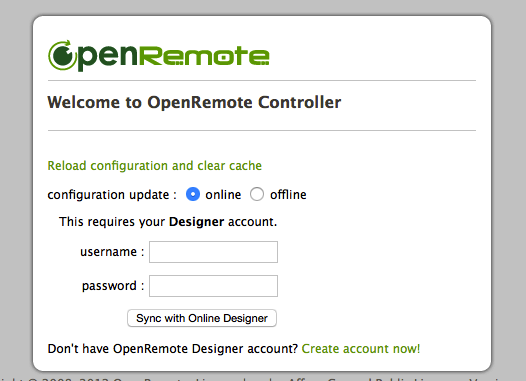

I installed OpenRemote on a Raspberry Pi connected to an Envisalink 3 (EV3) with DCS PC1616. The Envisalink 3 displays properly from a browser. And an Android app can access the DSC/EV3.
My problem is when I run openremote.sh on Raspberry Pi and then open http://myhost:8080/controller/ in a browser, the correct OpenRemote webpage appears:

I have a Designer account and I am logged in.
However, when I try to synch with Designer account from http://myhost:8080/controller/, I get:
- Authentication failed, please check your username and password.
I tried with username & password, and email & password all in correct case with same result.
I do have the Raspberry Pi set up to use two way OpenSSL certs. So, only authorized devices can access the pi. From an authorized mobile device, I tried both http and https://myhost:8080/controller/ and wasn't able to connect, which makes me think it may be a firewall issue.
1. Any idea why I can't login?
2. The gateway blocks just about all inbound access. And all http requests are redirected to https. Do I need to open one or more holes in the firewall for EV3 or OpenRemote to work?I need to open 8080 - anything else?
3. Can I just use designer offline and load the zip file?
Other items of note:
This file had no entry password for DSC. So, I added one, but it made no difference:
- OpenRemote/webapps/controller/WEB-INF/classes/config.properties
I haven't created anything in Designer yet
{kind=link}